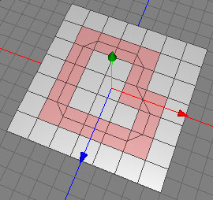
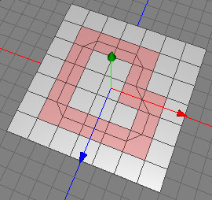

Jigsaw Tool
The jigsaw tool can be used to cut along an arbitrary polygon selection. See the images below for a visual example.
 

The cut follows the path of the polygon selection.
Modes
The jigsaw tool can only be applied to raw polygon objects. It's only available in polygon mode.
-

To perform the jigsaw tool you first have to make a polygon selection. Then click on an edge which has at least one selected polygon as a neighbor. The polygons will be cut following the polygon selection. The cut can still be adjusted by dragging the mouse along the edge you've clicked on. It is also possible to move the cut in and out by pressing the shift key during the drag. After final adjustment, release the mouse button and the operation will be completed.
Keys
- Shift : If you press the shift key while you drag the mouse, the cut will be moved in or out along the normals of the surface.
Properties
- Select cut: Enable this option if you want the new cut to be selected in edge mode.